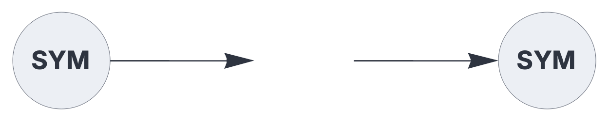
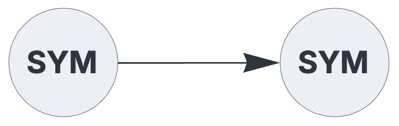

ENCODERS & DECODERS
codec

General-purpose encoder/decoder for symbolic tokens.
See also: https://creatingintelligence.org/#sparse-holographic-representations
Details
- Dynamically creates a lexicon that maps tokens to Sparse Holographic Representations (SHRs).
- Encoder plugin for the
inputcomponent. - Decoder plugin for the
outputcomponent. - Encodes string tokens as well as general data structures.
- Creates a random SHR for each unique token.
- Decoding is based on the auto-associative pattern matching threshold.
- Maintains a globally shared lexicon for each hyperparameter combination [N, P].
Use standard style options to customize the plugin’s appearance in circuit schematics.
Encoding and decoding chain for symbolic tokens
The following circuit encodes a token to an SHR and subsequently decodes it, mirroring the input.
{ "hyperparameters": {"default": [1000, 10]},
"dataflow": [
{"component": "input", "plugin": "codec", "send": [1]},
{"component": "output", "plugin": "codec", "receive": [1]}
]}
Source code
def codec(config):
"""General-purpose SHR encoder/decoder for symbolic expressions."""
# Extract hyperparameters from config
hyperparameters = config.get("hyperparameters", [0, 0])
n, p = hyperparameters[0], hyperparameters[1]
lex_key = (n, p)
# Initialize global hash table if missing for these dimensions
if lex_key not in circuit_codec_lexicon:
circuit_codec_lexicon[lex_key] = {None: []}
lex = circuit_codec_lexicon[lex_key]
# Use auto-associative pattern matching threshold
T = matching_threshold((n, p), (n, p))
def f(expr):
# Encoding logic
if config.get("component") == "input":
if isinstance(expr, list):
# Bundle multiple tokens
bundled = []
for e in expr:
res = f(e)
if res:
bundled.extend(res)
return sorted(list(set(bundled)))
if expr not in lex:
# 1-based indexing for native arrays
sampled = rng.choice(range(1, n + 1), size=p, replace=False)
lex[expr] = sorted(sampled.tolist())
return lex[expr]
# Decoding logic
if not expr:
return None
overlaps = {k: len(set(v).intersection(expr))
for k, v in lex.items() if k is not None}
result = [k for k, overlap in overlaps.items() if overlap >= T]
if len(result) == 0:
return None
elif len(result) == 1:
return result[0]
else:
return sorted(result)
def clear():
lex.clear()
lex[None] = []
return {
"label": "SYM",
"function": f,
"clear": clear
}